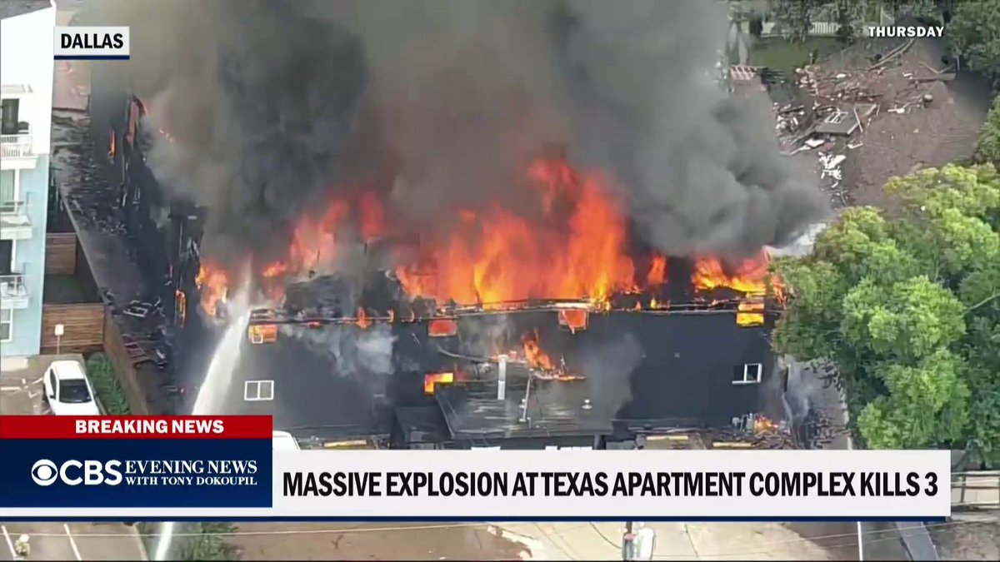
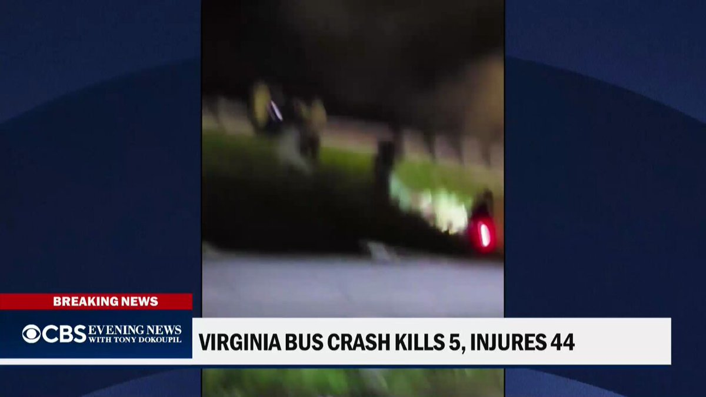
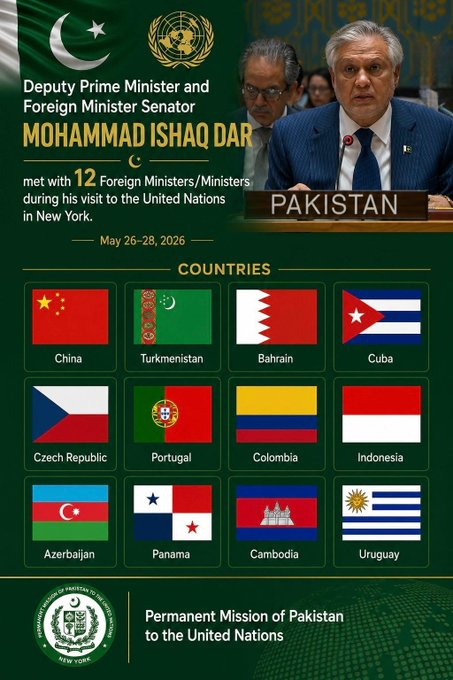

@CBSNews
📝 原文: How to save money when shopping for a car and other important considerations.
🇨🇳 译文: 买车时如何省钱以及其他重要考虑因素。

🕒 2026-05-30T09:00:00+00:00
| 来源 | 旧窗口内数量 | 本次新增 | 本次淘汰 | 当前窗口内共有 |
|---|---|---|---|---|
| 推文 + Dawn 新闻 | 0 | 23 | 0 | 23 |
| ARY News | 0 | 0 | 0 | 0 |
注：淘汰数 = 旧窗口内数量 + 本次新增 - 当前窗口内共有






暂无文章。